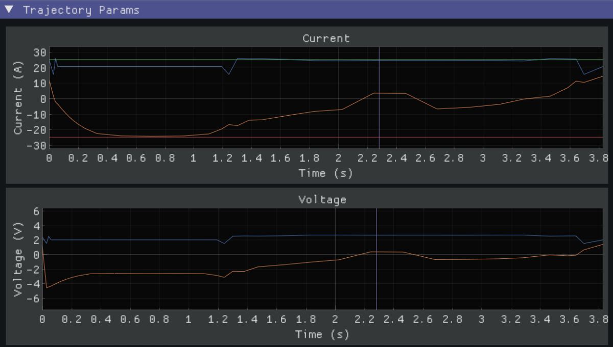
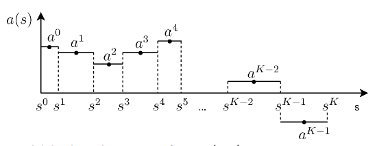

Trajectory Planning

Swipe down to see more
Time Optimal Equation
\[
T=\int_0^T1{\rm d}t = \int_0^L\frac1{\frac{{\rm d}s}{{\rm d}t}}{\rm d}s
\]
Constraints on voltage and current:
\[
\begin{aligned}
-V_{x,\max} & \le V_x \le V_{x,\max} \\
-I_{x,\max} & \le I_x \le I_{x,\max} \\
\end{aligned}
\]
Motor Model
Elevator model:
\[
V_E = K_g + K_S \cdot \frac{\dot d}{|\dot d|} + \frac{K_v}{I_e} \cdot \dot d + \frac{K_a}{I_e}
\cdot \ddot d
\]
Arm model:
\[
V_A = K_g \cdot \cos(\theta) + K_S \cdot \frac{\dot{\theta}}{|\dot{\theta}|} +
\frac{K_v}{I_a} \cdot \dot{\theta} + \frac{K_a}{I_a} \cdot \ddot{\theta}
\]
Discrete Kinematics
Based on the motor model,
voltage and current constraints are represented by:

Discrete accelerations
Second-Order Cone Programming
Rewriting the time optimal trajectory planning equations,
we can formulate it as a second-order cone programming problem:
\[
\begin{aligned}
\min_x\ & c^Tx \\
\text {s.t.}\
& A_ix+b_i\in \mathcal K_i \\
& x^TJx-r^Tx = 0 \\
& Gx=h \\
& Px\le q \\
\end{aligned}
\]
Augmented Lagrangian Method
\[
\begin{aligned}
& {\mathcal L}_\rho(x,\mu,\nu,\lambda,\eta) \\
=& \frac\rho2\sum_{i=1}^m ||P_{\mathcal K_i}(\frac{\mu_i}\rho-A_ix-b_i)||^2 + \\
& \frac\rho2\sum_{j=1}^q ||x^TJ_jx-r_j^Tx+\frac{\nu_j}\rho||^2 + \\
& \frac\rho2||\max[Px-q+\frac\eta\rho,0]||^2 + \\
& \frac\rho2||Gx-h+\frac\lambda\rho||^2 + c^Tx
\end{aligned}
\]
L-BFGS Optimization
\[
\begin{aligned}
x &\leftarrow \arg\min_x {\mathcal L}_\rho(x,\mu,\nu,\lambda,\eta) \\
\mu_i &\leftarrow P_{\mathcal{K}_i}[\mu_i-\rho(A_ix+b_i)] \\
\nu_j &\leftarrow \nu_j + \rho[x^TJ_jx-r_j^Tx] \\
\lambda &\leftarrow \lambda + \rho[Gx-h] \\
\eta &\leftarrow \rho[\max[\eta +\rho(Px-q),0]] \\
\rho &\leftarrow \min[(1+\gamma)\rho, \beta]
\end{aligned}
\]